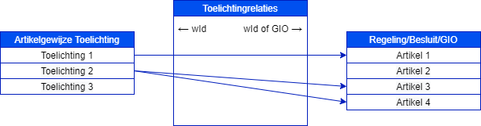

Toelichtingsrelaties voor artikelsgewijze toelichting
Artikelgewijze toelichting
Een artikelgewijze toelichting wordt gebruikt om in detail aan te geven hoe de regels luiden (geconsolideerde toelichting bij een geconsolideerde regeling) of wat er besloten en dus veranderd is (toelichting bij een besluit). Voor de tekst van een regeling wordt dan een artikel, lid of verandering daarvan toegelicht. Dit is een voldoende detailniveau, omdat in principe artikelen en leden zo geschreven worden dat ze over één onderwerp gaan en daarvan één aspect regelen. De artikelgewijze toelichting is zelf een aaneenschakeling van stukjes tekst die samen een doorlopend verhaal vormen, maar elk van de stukjes over één of meer artikelen/leden is zelfstandig leesbaar.
Waarom Toelichtingsrelaties?
De Toelichtingsrelatie-annotatie legt het verband tussen een stukje toelichting en de regeling-/besluit-onderdelen waar dat stukje over gaat. Dat is niet om het verwijzen vanuit de toelichting naar een artikel/lid mogelijk te maken, want dat kan al met IntRef, maar om de relatie om te kunnen draaien. Het wordt dan mogelijk om bij een artikel/lid/verandering de toelichting te tonen.
Met het oog op de toekomst biedt Toelichtingsrelaties ook de mogelijkheid om een toelichting aan een geografisch informatieobject(GIO) te koppelen zodat een toelichting bij een GIO of GIO-deel getoond zou kunnen worden. In het geval van een toelichting op een GIO die in een Besluit genoemd wordt: op betreffende GIO informatiepagina. In het geval van een toelichting op een GIO die in de Regeling genoemd wordt: bij het geconsolideerde GIO. Gebruik hiervan wordt vooralsnog afgeraden.
Werking Toelichtingsrelaties
Zowel bij een Besluit als bij een Regeling kan er door het bevoegd gezag een artikelsgewijze toelichting worden opgesteld. Van een Besluit worden deze niet geconsolideerd, van een Regeling wel. Deze toelichtingen vormen een 1:n relatie met artikelen en/of informatieobjecten uit het Besluit of de Regeling. Om deze relaties te beschrijven biedt STOP de module Toelichtingsrelaties.

Toelichtingsrelaties geeft de relatie tussen wId van de artikelsgewijze toelichting enerzijds en één of meerdere wId's van artikelen die in de regeling of besluit zijn opgenomen, anderzijds.
De Toelichtingsrelaties kunnen worden gebruikt om bij presentatie van de regelingtekst of besluittekst de van toepassing zijnde toelichting te tonen.
Beperkingen Toelichtingsrelaties
Niet elke Artikelgewijze Toelichting hoeft opgenomen te worden in de Toelichtingrelaties.
De wId's die gebruikt worden in Toelichtingsrelaties moeten daadwerkelijk bestaan, zowel in de Artikelgewijze Toelichting als in het Besluit of de Regeling.
Vooralsnog worden Toelichtingsrelaties bij GIO's afgeraden. Gebruik in plaats daarvan een Toelichtingsrelatie bij de verwijzing naar het GIO in de regeling.
Voorlopig biedt STOP niet de mogelijkheid om Toelichtingsrelatie te muteren, het is alleen mogelijk om het volledig aan te leveren.